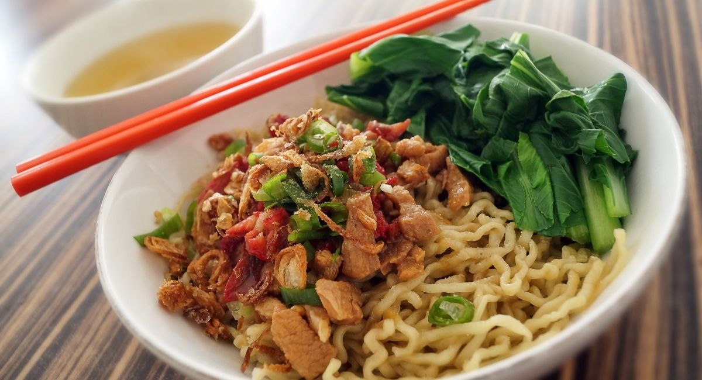

Chicken Noodle Recipe

Fresh and Sweet, and You Can Add Some Chillies, Too!
Mie ayam, mi ayam or bakmi ayam (Indonesian for 'chicken bakmi', literally
chicken noodles) is a common Indonesian dish of seasoned yellow wheat
noodles topped with diced chicken meat (ayam).
It is derived from culinary techniques employed in Chinese cuisine.In
Indonesia, the dish is recognized as a popular Chinese Indonesian dish,
served from simple travelling vendor carts frequenting residential areas,
humble street-side warung to restaurants.
Ingredients
Chicken Toppings
- 500 g boneless chicken thighs, cubed
- 6 cloves garlic, minced
- 1 tsp ginger paste
- 2 tbsp mushroom flavoured soy sauce
- 1 tbsp kecap manis
- 1 tbsp oyster sauce
- 1 1/2 cup chicken stock
- 1 tbsp cornstarch
- oil
Meatballs
- 350 minced beef
- 1 small shallot, minced
- 1 egg
- 2 tbps cornstarch
- salt
Chicken Soup
- 3 litres water
- 1 kg chicken soup bones
- 6 inch sugar cane, peeled and cut in half
- 1 thumb sized ginger, sliced
- 4 shallots, roughly chopped
- 6 cloves garlic, pounded
- black pepper corns
- fish sauce
Others
- Fresh egg noodles
- Chicken Oil
- Meatballs
- Blanched kailan
- Sambal bakso
- Ground white pepper
Cooking Step by Step
Chicken Toppings
-
In a bowl mix together mushroom flavoured soy sauce, chicken pieces,
cornstarch and freshly ground black pepper. Set aside.
-
In a wok add oil and sauté garlic and ginger, add marinated chicken and
cook for 5 minutes./li>
-
Add all of the remaining ingredients and continue to stir fry, cook
until sauce is reduced and thickens. Turn heat off then set aside.
Meatballs
-
Mix all ingredients in a bowl then form them into small balls. Set
aside.
Chicken Soup
-
In a large pot combine all Chicken Soup ingredients, bring to a boil.
Simmer in low heat for 45-60 minutes then turn heat off.
- Using a fine sieve, drain soup into another pot.
-
Place pot in medium heat then bring it to a boil, add and cook prepared
meatballs on chicken stock.
Others
-
Cook noodles according to packet instructions, drain then set aside.
-
In a big bowl combine one serving of cooked noodles, drizzle of chicken
oil, light soy sauce and ground white pepper. Mix well.
- Top with cooked chicken and blanched kailan.
- Place chicken soup with meatballs on a smaller bowl.
- Serve both bowl with sambal on the side.
Return to Index